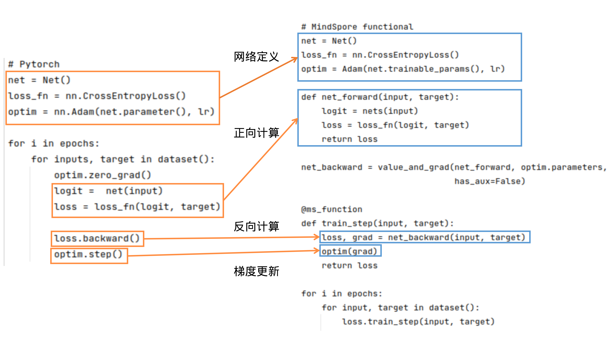

PyTorch对比


基础逻辑
PyTorch和MindSpore的基础逻辑如下图所示：

可以看到，PyTorch和MindSpore在实现流程中一般都需要网络定义、正向计算、反向计算、梯度更新等步骤。
网络定义：在网络定义中，一般会定义出需要的前向网络，损失函数和优化器。在Net()中定义前向网络，PyTorch的网络继承nn.Module；类似地，MindSpore的网络继承nn.Cell。在MindSpore中，损失函数和优化器除了使用MindSpore中提供的外，用户还可以使用自定义的优化器。可参考模型模块自定义。可以使用functional/nn等接口拼接需要的前向网络、损失函数和优化器，详细接口用法可参照接口对比。
正向计算：运行实例化后的网络，可以得到logit，将logit和target作为输入计算loss。需要注意的是，如果正向计算的函数有多个输出，在反向计算时需要注意多个输出对于计算结果的影响。
反向计算：得到loss后，我们可以进行反向计算。在PyTorch中可使用loss.backward()计算梯度，在MindSpore中，先用mindspore.grad()定义出反向传播方程net_backward，再将输入传入net_backward中，即可计算梯度。如果正向计算的函数有多个输出，在反向计算时，可将has_aux设置为True，即可保证只有第一个输出参与求导，其它输出值将直接返回。对于反向计算中接口用法区别详见自动微分对比。
梯度更新：将计算后的梯度更新到网络的Parameters中。在PyTorch中使用optim.step()；在MindSpore中，将Parameter的梯度传入定义好的optim中，即可完成梯度更新。
接口对比
Tensor/Parameter
在 PyTorch 中，可以存储数据的对象总共有四种，分别时Tensor、Variable、Parameter、Buffer。这四种对象的默认行为均不相同，当我们不需要求梯度时，通常使用 Tensor和 Buffer两类数据对象，当我们需要求梯度时，通常使用 Variable 和 Parameter 两类对象。PyTorch 在设计这四种数据对象时，功能上存在冗余（Variable 后续会被废弃也说明了这一点）。
MindSpore 优化了数据对象的设计逻辑，仅保留了两种数据对象：Tensor 和 Parameter，其中 Tensor 对象仅参与运算，并不需要对其进行梯度求导和参数更新，而 Parameter 数据对象和 PyTorch 的 Parameter 意义相同，会根据其属性requires_grad 来决定是否对其进行梯度求导和 参数更新。 在网络迁移时，只要是在 PyTorch 中未进行参数更新的数据对象，均可在 MindSpore 中声明为 Tensor。
functional接口
详细可参考PyTorch与MindSpore API映射表。
nn接口
nn.Module
使用 PyTorch 构建网络结构时，我们会用到nn.Module 类，通常将网络中的元素定义在__init__ 函数中并对其初始化，将网络的图结构表达定义在forward 函数中，通过调用这些类的对象完成整个模型的构建和训练。nn.Module 不仅为我们提供了构建图接口，它还为我们提供了一些常用的 API ，来帮助我们执行更复杂逻辑。
MindSpore 中的 nn.Cell 类发挥着和 PyTorch 中 nn.Module 相同的作用，都是用来构建图结构的模块，MindSpore 也同样提供了丰富的 API 供开发者使用，虽然名字不能一一对应，但 nn.Module 中常用的功能都可以在nn.Cell 中找到映射。
以几个常用方法为例:
常用方法 |
nn.Module |
nn.Cell |
|---|---|---|
获取子元素 |
named_children |
cells_and_names |
添加子元素 |
add_module |
insert_child_to_cell |
获取元素的参数 |
parameters |
get_parameters |
nn.Dropout
Dropout 常用于防止训练过拟合，有一个重要的 概率值 参数，该参数在 MindSpore 中的意义与 PyTorch 和 TensorFlow 中的意义完全相反。
在 MindSpore 中，概率值对应 Dropout 算子的属性 keep_prob，是指输入被保留的概率，1-keep_prob是指输入被置 0 的概率。
在 PyTorch 和 TensorFlow 中，概率值分别对应 Dropout 算子的属性 p和 rate，是指输入被置 0 的概率，与 MindSpore.nn.Dropout 中的 keep_prob 意义相反。
更多信息请参考链接： MindSpore Dropout 、 PyTorch Dropout 、 TensorFlow Dropout
nn.BatchNorm2d
BatchNorm 是 CV 领域比较特殊的正则化方法，它在训练和推理的过程中有着不同计算流程，通常由算子属性控制。MindSpore 和 PyTorch 的 BatchNorm 在这一点上使用了两种不同的参数组。
差异一
torch.nn.BatchNorm2d 在不同参数下的状态
training |
track_running_stats |
状态 |
|---|---|---|
True |
True |
期望中训练的状态，running_mean 和 running_var 会跟踪整个训练过程中 batch 的统计特性，而每组输入数据用当前 batch 的 mean 和 var 统计特性做归一化，然后再更新 running_mean 和 running_var。 |
True |
False |
每组输入数据会根据当前 batch 的统计特性做归一化，但不会有 running_mean 和 running_var 参数了。 |
False |
True |
期望中推理的状态，BN 使用 running_mean 和 running_var 做归一化，并且不会对其进行更新。 |
False |
False |
效果同第二点，只不过处于推理状态，不会学习 weight 和 bias 两个参数。一般不采用该状态。 |
mindspore.nn.BatchNorm2d 在不同参数下的状态
use_batch_statistics |
状态 |
|---|---|
True |
期望中训练的状态，moving_mean 和 moving_var 会跟踪整个训练过程中 batch 的统计特性，而每组输入数据用当前 batch 的 mean 和 var 统计特性做归一化，然后再更新 moving_mean 和 moving_var。 |
Fasle |
期望中推理的状态，BN 使用 moving_mean 和 moving_var 做归一化，并且不会对其进行更新。 |
None |
自动设置 use_batch_statistics。如果是训练，use_batch_statistics=True，如果是推理，use_batch_statistics=False。 |
通过比较可以发现，mindspore.nn.BatchNorm2d 相比 torch.nn.BatchNorm2d，少了两种冗余的状态，仅保留了最常用的训练和推理两种状态。
差异二
BatchNorm系列算子 的 momentum 参数在 MindSpore 和 PyTorch 表示的意义相反，关系为：
其他接口
torch.device
PyTorch 在构建模型时，通常会利用 torch.device 指定模型和数据绑定的设备，是在 CPU 还是 GPU 上，如果支持多 GPU，还可以指定具体的 GPU 序号。绑定相应的设备后，需要将模型和数据部署到对应设备，代码如下：
import os
import torch
from torch import nn
# bind to the GPU 0 if GPU is available, otherwise bind to CPU
device = torch.device("cuda:0" if torch.cuda.is_available() else "cpu") # 单 GPU 或者 CPU
# deploy model to specified hardware
model.to(device)
# deploy data to specified hardware
data.to(device)
# distribute training on multiple GPUs
if torch.cuda.device_count() > 1:
model = nn.DataParallel(model, device_ids=[0,1,2])
model.to(device)
# set available device
os.environ['CUDA_VISIBLE_DEVICE']='1'
model.cuda()
而在 MindSpore 中，我们通过 context 中 的 device_target 参数 指定模型绑定的设备，device_id 指定设备的序号。与 PyTorch 不同的是，一旦设备设置成功，输入数据和模型会默认拷贝到指定的设备中执行，不需要也无法再改变数据和模型所运行的设备类型。代码如下：
import mindspore as ms
ms.set_context(device_target='Ascend', device_id=0)
# define net
Model = ..
# define dataset
dataset = ..
# training, automatically deploy to Ascend according to device_target
Model.train(1, dataset)
此外，网络运行后返回的 Tensor 默认均拷贝到 CPU 设备，可以直接对该 Tensor 进行访问和修改，包括转成 numpy 格式，无需像 PyTorch 一样需要先执行 tensor.cpu 再转换成 numpy 格式。
参数初始化对比
默认权重初始化不同
我们知道权重初始化对网络的训练十分重要。每个nn接口一般会有一个隐式的声明权重，在不同的框架中，隐式的声明权重可能不同。即使功能一致，隐式声明的权重初始化方式分布如果不同，也会对训练过程产生影响，甚至无法收敛。
常见隐式声明权重的nn接口：Conv、Dense(Linear)、Embedding、LSTM 等，其中区别较大的是 Conv 类和 Dense 两种接口。MindSpore和PyTorch的 Conv 类和 Dense 隐式声明的权重和偏差初始化方式分布相同。
Conv2d
mindspore.nn.Conv2d的weight为：\(\mathcal{U} (-\sqrt{k},\sqrt{k} )\)，bias为：\(\mathcal{U} (-\sqrt{k},\sqrt{k} )\)。
torch.nn.Conv2d的weight为：\(\mathcal{U} (-\sqrt{k},\sqrt{k} )\)，bias为：\(\mathcal{U} (-\sqrt{k},\sqrt{k} )\)。
tf.keras.Layers.Conv2D的weight为：glorot_uniform，bias为：zeros。
其中，\(k=\frac{groups}{c_{in}*\prod_{i}^{}{kernel\_size[i]}}\)
Dense(Linear)
mindspore.nn.Dense的weight为：\(\mathcal{U}(-\sqrt{k},\sqrt{k})\)，bias为：\(\mathcal{U}(-\sqrt{k},\sqrt{k} )\)。
torch.nn.Linear的weight为：\(\mathcal{U}(-\sqrt{k},\sqrt{k})\)，bias为：\(\mathcal{U}(-\sqrt{k},\sqrt{k} )\)。
tf.keras.Layers.Dense的weight为：glorot_uniform，bias为：zeros。
其中，\(k=\frac{groups}{in\_features}\)
对于没有正则化的网络，如没有 BatchNorm 算子的 GAN 网络，梯度很容易爆炸或者消失，权重初始化就显得十分重要，各位开发者应注意权重初始化带来的影响。
参数初始化API对比
每个 torch.nn.init 的API都可以和MindSpore一一对应，除了 torch.nn.init.calculate_gain() 之外。更多信息，请查看PyTorch与MindSpore API映射表。
gain用来衡量非线性关系对于数据标准差的影响。由于非线性会影响数据的标准差，可能会导致梯度爆炸或消失。
torch.nn.init
torch.nn.init 需要一个Tensor作为输入，将输入的Tensor原地修改为目标结果。
import torch
x = torch.empty(2, 2)
torch.nn.init.uniform_(x)
运行以上代码之后，x将不在是非初始化状态，其元素将服从均匀分布。
mindspore.common.initializer
mindspore.common.initializer 用于在并行模式中延迟Tensor的数据的初始化。只有在调用了 init_data() 之后，才会使用指定的 init 来初始化Tensor的数据。每个Tensor只能使用一次 init_data() 。
[1]:
import mindspore
from mindspore.common.initializer import initializer, Uniform
x = initializer(Uniform(), [1, 2, 3], mindspore.float32)
在运行以上代码之后，x 其实尚未完成初始化。如果此时 x 被用来计算，将会作为0来处理。然而，在打印时，会自动调用 init_data() 。
自动微分对比
MindSpore 和 PyTorch 都提供了自动微分功能，让我们在定义了正向网络后，可以通过简单的接口调用实现自动反向传播以及梯度更新。但需要注意的是，MindSpore 和 PyTorch 构建反向图的逻辑是不同的，这个差异也会带来 API 设计上的不同。
PyTorch的自动微分
我们知道 PyTorch 是基于计算路径追踪的自动微分，当我们定义一个网络结构后， 并不会建立反向图，而是在执行正向图的过程中，Variable 或 Parameter 记录每一个正向计算对应的反向函数，并生成一个动态计算图，用于后续的梯度计算。当在最终的输出处调用 backward 时，就会从根节点到叶节点应用链式法则计算梯度。PyTorch 的动态计算图所存储的节点实际是 Function 函数对象，每当对 Tensor 执行一步运算后，就会产生一个 Function 对象，它记录了反向传播中必要的信息。反向传播过程中，autograd
引擎会按照逆序，通过 Function 的 backward 依次计算梯度。 这一点我们可以通过 Tensor 的隐藏属性查看。
例如，运行以下代码：
import torch
from torch.autograd import Variable
x = Variable(torch.ones(2, 2), requires_grad=True)
x = x * 2
y = x - 1
y.backward(x)
会自动获取x的定义到获取输出y这个过程对x的梯度结果。
需要注意的是PyTorch的backward是累计的，更新完之后需要清空optimizer。
MindSpore的自动微分
在图模式下，MindSpore 的自动微分是基于图结构的微分，和 PyTorch 不同，它不会在正向计算过程中记录任何信息，仅仅执行正常的计算流程（在PyNative模式下和 PyTorch 类似）。那么问题来了，如果整个正向计算都结束了，MindSpore 也没有记录任何信息，那它是如何知道反向传播怎么执行的呢？
MindSpore 在做自动微分时，需要传入正向图结构，自动微分的过程就是通过对正向图的分析从而得到反向传播信息，自动微分的结果与正向计算中具体的数值无关，仅和正向图结构有关。通过对正向图的自动微分，我们得到了反向传播过程，而这个反向传播过程其实也是通过一个图结构来表达，也就是反向图。将反向图添加到用户定义的正向图之后，组成一个最终的计算图。不过后添加的反向图和其中的反向算子我们并不感知，也无法手动添加，只能通过 MindSpore 为我们提供的接口自动添加，这样做也避免了我们在反向构图时引入错误。
最终，我们看似仅执行了正向图，其实图结构里既包含了正向算子，又包含了 MindSpore 为我们添加的反向算子，也就是说，MindSpore 在我们定义的正向图后面又新加了一个看不见的 Cell，这个 Cell 里都是根据正向图推导出来的反向算子。
而这个帮助我们构建反向图的接口就是 grad ：
[2]:
import mindspore as ms
from mindspore import nn
class GradNetWrtX(nn.Cell):
def __init__(self, net):
super(GradNetWrtX, self).__init__()
self.net = net
def construct(self, x, y):
gradient_function = ms.grad(self.net)
return gradient_function(x, y)
查看文档介绍我们可以发现，grad 并不是一个算子，它的输入输出并不是 Tensor，而是我们定义的正向图和自动微分得到的反向图。为什么输入是一个图结构呢？因为构建反向图并不需要知道具体的输入数据是什么，只要知道正向图的结构就行了，有了正向图就可以推算出反向图结构，之后我们可以把正向图+反向图当成一个新的计算图来对待，这个新的计算图就像是一个函数，对于你输入的任何一组数据，它不仅能计算出正向的输出，还能计算出所有权重的梯度，由于图结构是固定的，并不保存中间变量，所以这个图结构可以被反复调用。
同理，之后我们再给网络加上优化器结构时，优化器也会加上优化器相关的算子，也就是再给这个计算图加点我们不感知的优化器算子，最终，计算图就构建完成。
在 MindSpore 中，大部分操作都会最终转换成真实的算子操作，最终加入到计算图中，因此，我们实际执行的计算图中算子的数量远多于我们最开始定义的计算图中算子的数量。
在MindSpore中，提供了TrainOneStepCell和TrainOneStepWithLossScaleCell这两个接口来包装整个训练流程，如果在常规的训练流程外有其他的操作，如梯度裁剪、规约、中间变量返回等，需要自定义训练的Cell，详情请参考训练及推理流程。
梯度求导
梯度求导涉及的算子和接口差异主要是由 MindSpore 和 PyTorch 自动微分原理不同引起的。
torch.autograd.backward
torch.autograd.backward对于一个标量，调用它的backward方法后会根据链式法则自动计算出叶子节点的梯度值。对于向量和矩阵，需要定义grad_tensor来计算矩阵的梯度。 通常在调用一次backward后，PyTorch会自动把计算图销毁，所以要想对某个变量重复调用backward，则需要将retain_graph参数设置为True。 若需要计算更高阶的梯度，需要将create_graph设置为True。 z.backward()和torch.autograd.backward(z)两种表达等价。
[3]:
import torch
print("=== tensor.backward ===")
x = torch.tensor(1.0, requires_grad=True)
y = torch.tensor(2.0, requires_grad=True)
z = x**2+y
print("x.grad before backward", x.grad)
print("y.grad before backward", y.grad)
z.backward()
print("z", z)
print("x.grad", x.grad)
print("y.grad", y.grad)
print("=== torch.autograd.backward ===")
x = torch.tensor(1.0, requires_grad=True)
y = torch.tensor(2.0, requires_grad=True)
z = x**2+y
torch.autograd.backward(z)
print("z", z)
print("x.grad", x.grad)
print("y.grad", y.grad)
=== tensor.backward ===
x.grad before backward None
y.grad before backward None
z tensor(3., grad_fn=<AddBackward0>)
x.grad tensor(2.)
y.grad tensor(1.)
=== torch.autograd.backward ===
z tensor(3., grad_fn=<AddBackward0>)
x.grad tensor(2.)
y.grad tensor(1.)
可以看到，在调用backward函数之前，x.grad和y.grad函数为空。而backward计算过后，x.grad和y.grad分别代表导数计算后的值。
该接口在MindSpore中用mindspore.grad实现。上述PyTorch用例可转化为：
[4]:
import mindspore
print("=== mindspore.grad ===")
x = mindspore.Tensor(1.0)
y = mindspore.Tensor(2.0)
def net(x, y):
return x**2+y
out = mindspore.grad(net, grad_position=0)(x, y)
print("out", out)
out1 = mindspore.grad(net, grad_position=1)(x, y)
print("out1", out1)
=== mindspore.grad ===
out 2.0
out1 1.0
若上述net有多个输出，需要注意网络多输出对于求梯度的影响。
[5]:
import mindspore
print("=== mindspore.grad 多个output ===")
x = mindspore.Tensor(1.0)
y = mindspore.Tensor(2.0)
def net(x, y):
return x**2+y, x
out = mindspore.grad(net, grad_position=0)(x, y)
print("out", out)
out1 = mindspore.grad(net, grad_position=1)(x, y)
print("out1", out)
=== mindspore.grad 多个output ===
out 3.0
out1 3.0
PyTorch不支持此种表达：
[6]:
import torch
print("=== torch.autograd.backward 不支持多个output ===")
x = torch.tensor(1.0, requires_grad=True)
y = torch.tensor(2.0, requires_grad=True)
z = x**2+y
torch.autograd.backward(z)
print("z", z)
print("x.grad", x.grad)
print("y.grad", y.grad)
=== torch.autograd.backward 不支持多个output ===
z tensor(3., grad_fn=<AddBackward0>)
x.grad tensor(2.)
y.grad tensor(1.)
因此， 若要在MindSpore只对第一个输出求梯度，在MindSpore中需要使用has_aux参数。
[7]:
import mindspore
print("=== mindspore.grad has_aux ===")
x = mindspore.Tensor(1.0)
y = mindspore.Tensor(2.0)
def net(x, y):
return x**2+y, x
grad_fcn = mindspore.grad(net, grad_position=0, has_aux=True)
out, _ = grad_fcn(x, y)
print("out", out)
grad_fcn1 = mindspore.grad(net, grad_position=1, has_aux=True)
out, _ = grad_fcn1(x, y)
print("out", out)
=== mindspore.grad has_aux ===
out 2.0
out 1.0
torch.autograd.grad
torch.autograd.grad此接口与torch.autograd.backward基本一致。两者的区别为：前者是直接修改各个 Tensor 的 grad 属性，后者是返回参数的梯度值列表。因此在迁移到MindSpore时，可同样参考上述用例。
[8]:
import torch
print("=== torch.autograd.grad ===")
x = torch.tensor(1.0, requires_grad=True)
y = torch.tensor(2.0, requires_grad=True)
z = x**2+y
out = torch.autograd.grad(z, x)
out1 = torch.autograd.grad(z, y)
print("out", out)
print("out1", out1)
=== torch.autograd.grad ===
out (tensor(2.),)
out1 (tensor(1.),)
torch.no_grad
在 PyTorch 中，默认情况下，执行正向计算时会记录反向传播所需的信息，在推理阶段或无需反向传播网络中，这一操作是冗余的，会额外耗时，因此，PyTorch 提供了torch.no_grad 来取消该过程。
而 MindSpore 只有在调用grad才会根据正向图结构来构建反向图，正向执行时不会记录任何信息，所以 MindSpore 并不需要该接口，也可以理解为 MindSpore 的正向计算均在torch.no_grad 情况下进行的。
[9]:
import torch
print("=== torch.no_grad ===")
x = torch.tensor(1.0, requires_grad=True)
y = torch.tensor(2.0, requires_grad=True)
z = x**2+y
print("z.requires_grad", z.requires_grad)
with torch.no_grad():
z = x**2+y
print("z.requires_grad", z.requires_grad)
=== torch.no_grad ===
z.requires_grad True
z.requires_grad False
torch.enable_grad
若 PyTorch 开启了 torch.no_grad 禁用了梯度计算，可以使用此接口启用。
而 MindSpore 只有在调用grad才会根据正向图结构来构建反向图，正向执行时不会记录任何信息，所以 MindSpore 并不需要该接口，也可以理解为 MindSpore 的反向计算均在torch.enable_grad 情况下进行的。
[10]:
import torch
print("=== torch.enable_grad ===")
x = torch.tensor(1.0, requires_grad=True)
y = torch.tensor(2.0, requires_grad=True)
with torch.no_grad():
z = x**2+y
print("z.requires_grad", z.requires_grad)
with torch.enable_grad():
z = x**2+y
print("z.requires_grad", z.requires_grad)
=== torch.enable_grad ===
z.requires_grad False
z.requires_grad True
retain_graph
由于 PyTorch 是基于函数式的自动微分，所以默认每次执行完反向传播后都会自动清除记录的信息，从而进行下一次迭代。这就会导致当我们想再次利用这些反向图和梯度信息时，由于已被删除而获取失败。因此，PyTorch 提供了backward(retain_graph=True) 来主动保留这些信息。
而 MindSpore 则不需要这个功能，MindSpore 是基于计算图的自动微分，反向图信息在调用grad后便永久的记录在计算图中，只要再次调用计算图就可以获取梯度信息。
高阶导数
基于计算图的自动微分还有一个好处，我们可以很方便的实现高阶求导。第一次对正向图执行grad 操作后，我们可以得到一阶导，此时计算图被更新为正向图+一阶导的反向图结构，但我们再次对更新后的计算图执行 grad后，我们就可以得到二阶导，以此类推，通过基于计算图的自动微分，我们很容易求得一个网络的高阶导数。
优化器对比
优化器支持差异
PyTorch和MindSpore同时支持的优化器异同比较详见API映射表。MindSpore暂不支持的优化器：LBFGS，NAdam，RAdam。
优化器的执行和使用差异
PyTorch单步执行优化器时，一般需要手动执行 zero_grad() 方法将历史梯度设置为0(或None)，然后使用 loss.backward() 计算当前训练step的梯度，最后调用优化器的 step() 方法实现网络权重的更新；
optimizer = optim.SGD(model.parameters(), lr=0.01, momentum=0.9)
scheduler = ExponentialLR(optimizer, gamma=0.9)
for epoch in range(20):
for input, target in dataset:
optimizer.zero_grad()
output = model(input)
loss = loss_fn(output, target)
loss.backward()
optimizer.step()
scheduler.step()
MindSpore中优化器的使用，只需要直接对梯度进行计算，然后使用 optimizer(grads) 执行网络权重的更新。
import mindspore
from mindspore import nn
optimizer = nn.SGD(model.trainable_params(), learning_rate=0.01)
grad_fn = mindspore.value_and_grad(forward_fn, None, optimizer.parameters, has_aux=True)
def train_step(data, label):
(loss, _), grads = grad_fn(data, label)
optimizer(grads)
return loss
超参差异
超参名称
网络权重和学习率入参名称异同：
参数 |
PyTorch |
MindSpore |
差异 |
|---|---|---|---|
网络权重 |
params |
params |
参数名相同 |
学习率 |
lr |
learning_rate |
参数名不同 |
MindSpore：
from mindspore import nn
optimizer = nn.SGD(model.trainable_params(), learning_rate=0.01)
PyTorch：
from torch import optim
optimizer = optim.SGD(model.parameters(), lr=0.01)
超参配置方式
参数不分组：
params入参支持类型不同： PyTorch入参类型为iterable(Tensor)和iterable(dict)，支持迭代器类型； MindSpore入参类型为list(Parameter)，list(dict)，不支持迭代器。其他超参配置及支持差异详见API映射表。
参数分组：
PyTorch支持所有参数分组：
optim.SGD([ {'params': model.base.parameters()}, {'params': model.classifier.parameters(), 'lr': 1e-3} ], lr=1e-2, momentum=0.9)
MindSpore仅支持特定key分组：“params”，“lr”，“weight_decay”，“grad_centralization”，“order_params”。
conv_params = list(filter(lambda x: 'conv' in x.name, net.trainable_params())) no_conv_params = list(filter(lambda x: 'conv' not in x.name, net.trainable_params())) group_params = [{'params': conv_params, 'weight_decay': 0.01, 'lr': 0.02}, {'params': no_conv_params}] optim = nn.Momentum(group_params, learning_rate=0.1, momentum=0.9)
运行时超参修改
PyTorch支持在训练过程中修改任意的优化器参数，并提供了 LRScheduler 用于动态修改学习率；
MindSpore当前不支持训练过程中修改优化器参数，但提供了修改学习率和权重衰减的方式，使用方式详见学习率和权重衰减章节。
权重衰减
PyTorch中修改 weight_decay：
from torch.nn import optim
optimizer = optim.SGD(param_groups, lr=0.01, weight_decay=0.1)
decay_factor = 0.1
def train_step(data, label):
optimizer.zero_grad()
output = model(data)
loss = loss_fn(output, label)
loss.backward()
optimizer.step()
for param_group in optimizer.param_groups:
param_group["weight_decay"] *= decay_factor
MindSpore中实现动态weight decay：用户可以继承 Cell 自定义动态weight decay的类，传入优化器中。
class ExponentialWeightDecay(Cell):
def __init__(self, weight_decay, decay_rate, decay_steps):
super(ExponentialWeightDecay, self).__init__()
self.weight_decay = weight_decay
self.decay_rate = decay_rate
self.decay_steps = decay_steps
def construct(self, global_step):
p = global_step / self.decay_steps
return self.weight_decay * ops.pow(self.decay_rate, p)
weight_decay = ExponentialWeightDecay(weight_decay=0.1, decay_rate=0.1, decay_steps=10000)
optimizer = nn.SGD(net.trainable_params(), weight_decay=weight_decay)
优化器状态的保存与加载
PyTorch的优化器模块提供了 state_dict() 用于优化器状态的查看及保存，load_state_dict 用于优化器状态的加载。
优化器保存，可以使用
torch.save()把获取到的state_dict保存到pkl文件中：optimizer = optim.SGD(param_groups, lr=0.01) torch.save(optimizer.state_dict(), save_path)
优化器加载，可以使用
torch.load()加载保存的state_dict，然后使用load_state_dict将获取到的state_dict加载到优化器中：optimizer = optim.SGD(param_groups, lr=0.01) state_dict = torch.load(save_path) optimizer.load_state_dict(state_dict)
MindSpore的优化器模块继承自 Cell，优化器的保存与加载和网络的保存与加载方式相同，通常情况下配合 save_checkpoint 与load_checkpoint 使用。
优化器保存，可以使用
mindspore.save_checkpoint()将优化器实例保存到ckpt文件中：optimizer = nn.SGD(param_groups, lr=0.01) state_dict = mindspore.save_checkpoint(opt, save_path)
优化器加载，可以使用
mindspore.load_checkpoint()加载保存的ckpt文件，然后使用load_param_into_net将获取到的param_dict加载到优化器中：optimizer = nn.SGD(param_groups, lr=0.01) param_dict = mindspore.load_checkpoint(save_path) mindspore.load_param_into_net(opt, param_dict)
学习率策略对比
动态学习率差异
PyTorch中定义了 LRScheduler 类用于对学习率进行管理。使用动态学习率时，将 optimizer 实例传入 LRScheduler 子类中，通过循环调用 scheduler.step() 执行学习率修改，并将修改同步至优化器中。
optimizer = optim.SGD(model.parameters(), lr=0.01, momentum=0.9)
scheduler = ExponentialLR(optimizer, gamma=0.9)
for epoch in range(20):
for input, target in dataset:
optimizer.zero_grad()
output = model(input)
loss = loss_fn(output, target)
loss.backward()
optimizer.step()
scheduler.step()
MindSpore中的动态学习率有 Cell 和 list 两种实现方式，两种类型的动态学习率使用方式一致，都是在实例化完成之后传入优化器，前者在内部的 construct 中进行每一步学习率的计算，后者直接按照计算逻辑预生成学习率列表，训练过程中内部实现学习率的更新。具体请参考动态学习率。
polynomial_decay_lr = nn.PolynomialDecayLR(learning_rate=0.1, end_learning_rate=0.01, decay_steps=4, power=0.5)
optim = nn.Momentum(params, learning_rate=polynomial_decay_lr, momentum=0.9, weight_decay=0.0)
grad_fn = mindspore.value_and_grad(forward_fn, None, optimizer.parameters, has_aux=True)
def train_step(data, label):
(loss, _), grads = grad_fn(data, label)
optimizer(grads)
return loss
自定义学习率差异
PyTorch的动态学习率模块 LRScheduler 提供了LambdaLR 接口供用户自定义学习率调整规则，用户通过传入lambda表达式或自定义函数实现学习率指定。
optimizer = optim.SGD(model.parameters(), lr=0.01)
lbd = lambda epoch: epoch // 5
scheduler = optim.lr_scheduler.LambdaLR(optimizer, lr_lambda=lbd)
for epoch in range(20):
train(...)
validate(...)
scheduler.step()
MindSpore未提供类似的lambda接口，自定义学习率调整策略可以通过自定义函数或自定义 LearningRateSchedule 来实现。
方式一：定义python函数指定计算逻辑，返回学习率列表：
def dynamic_lr(lr, total_step, step_per_epoch):
lrs = []
for i in range(total_step):
current_epoch = i // step_per_epoch
factor = current_epoch // 5
lrs.append(lr * factor)
return lrs
decay_lr = dynamic_lr(lr=0.01, total_step=200, step_per_epoch=10)
optim = nn.SGD(params, learning_rate=decay_lr)
方式二：继承 LearningRateSchedule，在 construct 方法中定义变化策略:
class DynamicDecayLR(LearningRateSchedule):
def __init__(self, lr, step_per_epoch):
super(DynamicDecayLR, self).__init__()
self.lr = lr
self.step_per_epoch = step_per_epoch
self.cast = P.Cast()
def construct(self, global_step):
current_epoch = self.cast(global_step, mstype.float32) // step_per_epoch
return self.learning_rate * (current_epoch // 5)
decay_lr = DynamicDecayLR(lr=0.01, step_per_epoch=10)
optim = nn.SGD(params, learning_rate=decay_lr)
学习率获取
PyTorch：
固定学习率情况下，通常通过
optimizer.state_dict()进行学习率的查看和打印，例如参数分组时，对于第n个参数组，使用optimizer.state_dict()['param_groups'][n]['lr']，参数不分组时，使用optimizer.state_dict()['param_groups'][0]['lr']；动态学习率情况下，可以使用
LRScheduler的get_lr方法获取当前学习率，或使用print_lr方法打印学习率。
MindSpore：
目前未提供直接查看学习率的接口，后续版本中会针对此问题进行修复。
学习率更新
PyTorch：
PyTorch提供了torch.optim.lr_scheduler包用于动态修改lr，使用的时候需要显式地调用optimizer.step()和scheduler.step()来更新lr，详情请参考如何调整学习率。
MindSpore：
MindSpore的学习率是包到优化器里面的，每调用一次优化器，学习率更新的step会自动更新一次，详情请参考学习率与优化器。
随机数策略对比
随机数API对比
PyTorch与MindSpore在接口名称上无差异，MindSpore由于不支持原地修改，所以缺少Tensor.random_接口。其余接口均可和PyTorch一一对应。
随机种子和生成器
MindSpore使用seed控制随机数的生成，而PyTorch使用torch.Generator进行随机数的控制。
MindSpore的seed分为两个等级，graph-level和op-level。graph-level下seed作为全局变量，绝大多数情况下无需用户设置，用户只需调整op-level seed。（API中涉及的seed参数，均为op-level）如果一段程序中两次使用了同一个随机数算法，那么两次的结果是不同的（尽管设置了相同的随机种子）；如果重新运行脚本，那么第二次运行的结果应该与第一次保持一致。示例如下：
# If a random op is called twice within one program, the two results will be different: import mindspore as ms from mindspore import Tensor, ops minval = Tensor(1.0, ms.float32) maxval = Tensor(2.0, ms.float32) print(ops.uniform((1, 4), minval, maxval, seed=1)) # generates 'A1' print(ops.uniform((1, 4), minval, maxval, seed=1)) # generates 'A2' # If the same program runs again, it repeat the results: print(ops.uniform((1, 4), minval, maxval, seed=1)) # generates 'A1' print(ops.uniform((1, 4), minval, maxval, seed=1)) # generates 'A2'
torch.Generator常在函数中作为关键字参数传入。在未指定/实例化Generator时，会使用默认Generator (torch.default_generator)。可以使用以下代码设置指定的torch.Generator的seed：
G = torch.Generator() G.manual_seed(1)
此时和使用default_generator并将seed设置为1的结果相同。例如torch.manual_seed(1)。
PyTorch的Generator中的state表示的是此Generator的状态，长度为5056，dtype为uint8的Tensor。在同一个脚本中，多次使用同一个Generator，Generator的state会发生改变。在有两个/多个Generator的情况下，如g1，g2，可以设置 g2.set_state(g1.get_state()) 使得g2达到和g1相同的状态。即使用g2相当于使用当时状态的g1。如果g1和g2具有相同的seed和state，则二者生成的随机数相同。